Hao Zhang (张皓)
Hao Zhang (Chinese: 张皓; born Feb. 1994) National Key Laboratory for Novel Software Technology Department of Computer Science and Technology Nanjing University, China Email: zhangh0214#gmail.com (preferred) or zhangh#lamda.nju.edu.cn [知乎] [GitHub] [Google Scholar] [LinkedIn] [Quora] |
Biography
| Currently, Hao is pursuing his M.Sc.'s degree at LAMDA Group led by professor Zhi-Hua Zhou. His adviser is professor Jianxin Wu. Before that, he received his B.Sc.'s degree in Nanjing University, China, in 2016. In the same year, he was admitted to study for a M.Sc.'s degree in Nanjing University without entrance examination. He used to be a member of Excellent Engineer Training Program, from Ministry of Education of China. |
Besides, he has been a member of Communist Party of China since 2013. He is a columnist/writer of AI Era (新智元)/. |

Research Interests
Hao's current research interests mainly include machine learning and computer vision, especially on deep learning and visual recognition. He is working on exploiting convolutional features in both supervised and unsupervised ways to improve the efficiency of convolutional neural networks. | |
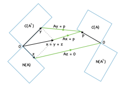 | Besides, he is particularly interested in linear algebra and its applications. Linear algebra is closely related to real-world applications, such as linear systems (Ax = b), dynamic systems (uk+1 = Auk or du(t)/dt = Au(t)), optimization problems (argminu f(u)), linear transformations (T(u) = Au), etc. Please refer to this page for further discussions. |
Awards and Honors
n First Place in Apparent Personality Analysis Contest. ECCV, 2016.
n National Scholarship. Ministry of Education of China, 2013.
n Member of Excellent Engineer Training Program, Ministry of Education of China, 2013--2016.
n Excellent All-round Student. Jiangsu Provincial Department of Education, 2015.
n Top-grade in Jiangsu Provincial Undergraduate Electronics Design Contest. Jiangsu Committee of the National Undergraduate Electronics Design Contest, 2014.
n Top-grade "Red Sun" Scholarship. Nanjing Red Sun CO., LTD, 2014. (only 20 from 12,000 undergraduate students in Nanjing University achieved per year)
n Top-grade Graduate Research Scholarship. Nanjing University, 2016, 2017, 2018.
n Excellent Students. Nanjing University, 2014.
n Excellent Cadre of Students. Nanjing University, 2013.
n Excellent Undergraduate Student. Nanjing University, 2016.
n People's Scholarship Speciality Specialization. Nanjing University, 2015.
n People's Scholarship Social Work Specialization. Nanjing University, 2014.
n Second Class Xingquan Responsibility Scholarship. Nanjing University, 2015.
n Excellent League Member (twice). Youth League Committee of Nanjing University, 2014, 2015.
n Excellent Student in Summer Social Practice. Youth League Committee of Nanjing University, 2013.
Publications
| Jian-Hao Luo, Hao Zhang, Hong-Yu Zhou, Chen-Wei Xie, Jianxin Wu, and Weiyao Lin. ThiNet: Pruning CNN filters for a thinner net. IEEE Transactions on Pattern Analysis and Machine Intelligence (TPAMI), in press. [pdf] [code] |
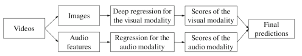 | Chen-Lin Zhang, Hao Zhang, Xiu-Shen Wei, and Jianxin Wu. Deep bimodal regression for apparent personality analysis. In Proceedings of the 14th European Conference on Computer Vision (ECCV'16) Workshops, LNCS 9915, pages 311-324, 2016. [pdf] [project page] [slides] [code] |
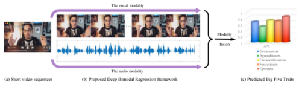 | Xiu-Shen Wei, Chen-Lin Zhang, Hao Zhang, and Jianxin Wu. Deep bimodal regression of apparent personality traits from short video sequences. IEEE Transactions on Affective Computing (TAC), 9(3): 303-315, 2018. [pdf] [project page] [code] |
| Hao Zhang and Jianxin Wu. A survey on unsupervised image retrieval using deep features. Journal of Computer Research and Development (CRAD), 55(9): 1829-1842, 2018. [pdf] (in Chinese) |
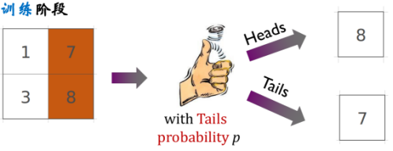 | Hao Zhang and Jianxin Wu. Ensemble max-pooling: Is only the maximum activation useful when pooling. In Proceedings of CCF Conference on Artificial Intelligence (CCFAI), 2017. [pdf] [poster] [spotlight] (acceptance rate: 34.0%) (in Chinese) |
| Hao Zhang and Jianxin Wu. Ensemble max-pooling: Is only the maximum activation useful when pooling. Journal of University of Science and Technology of China (JUST), 47(10): 799-807, 2017. [pdf] (in Chinese) |


Articles
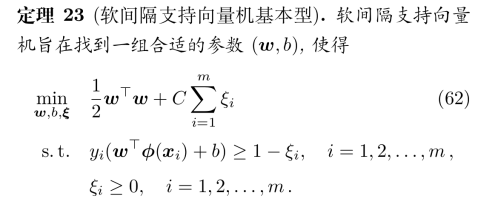 | 从零推导支持向量机（SVM） [pdf] |
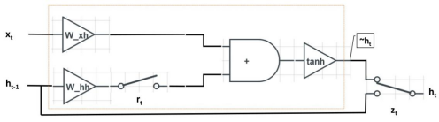 | |
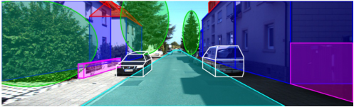 | 直观梳理深度学习 n 深度学习基础（基本概念、优化算法、初始化、正则化等） [link] (repost on 新智元, 搜狐) n 计算机视觉四大基本任务（分类、定位、检测、分割） [link] (repost on 新智元, 搜狐) n 计算机视觉其他应用（网络压缩、视觉问答、可视化、风格迁移等） [link] (repost on 新智元, 人工智能头条, 前沿技术研究) n 视频理解近期研究进展 [link] (repost on 新智元, 搜狐) |
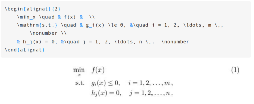 | 论文格式排版你真的做对了吗? 常用格式及其LaTeX书写方法介绍 [link] (repost on 机器之心, 搜狐, 凤凰网科技, 新浪, 极客头条) |
| 你需要的机器学习数学基础速查手册 n 线性代数 [pdf] n 概率论 [pdf] |
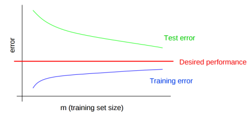 | |
| 深度学习基础及数学原理 [pdf] [slides] |
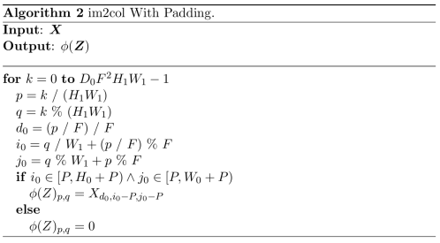 | A simple and efficient implementation of im2col in convolution neural networks [pdf] |
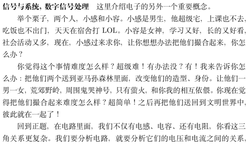 | 在电子,你会被加哪些技能点--电子学院专业课程分析 [pdf] |
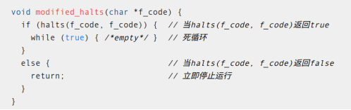 | 停机问题(C语言版) [link] |
| Notes n Notes on machine learning [pdf] n Notes on mathematics for computer science [pdf] n Notes on C++: Concepts and practices [pdf] |


MOOC and Online Courses
Hao is determined to become a lifelong learner. The followings are the courses he completed.
n John Guttag. 6.00: Introduction to computer science and programming. MIT, 2011. n Dennis Freeman. 6.01: Introduction to electrical engineering and computer science I. MIT, 2011. n Erik Demaine and Srinivas Devadas. 6.006: Introduction to algorithms. MIT, 2011. n Charles Leiserson and Erik Demaine. 6.046: Introduction to algorithms. MIT, 2005. n John Tsitsiklis. 6.041: Probabilistic systems analysis and applied probability. MIT, 2013. n Tom Leighton and Marten van Dijk. 6.042: Mathematics for computer science. MIT, 2010. n Albert Meyer and Adam Chlipala. 6.042: Mathematics for computer science. MIT, 2015. n Erik Demaine, Srinivas Devadas, and Nancy Lynch. 6.046: Design and analysis of algorithms. MIT, 2015. n Sarina Canelake. 6.189: A Gentle introduction to programming using Python. MIT, 2011. n David Jerison. 18.01: Single variable calculus. MIT, 2010. n Denis Auroux. 18.02: Multi-variable calculus. MIT, 2010. n Jeremy Orloff and Jonathan Bloom. 18.05: Introduction to probability and statistics. MIT, 2014. n Gilbert Strang. 18.06: Linear algebra. MIT, 2011. | |
n Andrew Ng. CS229: Machine learning. Stanford. n Andrew Ng et al. UFLDL: Deep learning tutorial. Stanford. n Fei-Fei Li, Andrej Karpathy, and Justin Johnson. CS231n: Convolutional neural networks for visual recognition. Stanford, 2016. n Fei-Fei Li, Justin Johnson, and Serena Yeung. CS231n: Convolutional neural networks for visual recognition. Stanford, 2017 & 2018. n Chris Manning and Richard Socher. CS224n: Natural language processing with deep learning. Stanford, 2017. | |
n Michael Fitzpatrick. Introduction to programming with MATLAB. Vanderbilt University. [Grade: 100%] [Statement of Accomplishment (with distinction)] n Hsuan-Tien Lin. Machine learning foundations. National Taiwan University. [Grade: 96.4%] [Certificate (with distinction)] n Hsuan-Tien Lin. Machine learning techniques. National Taiwan University. [Grade: 96.0%] [Certificate (with distinction)] n Andrew Ng. Machine learning. Stanford. [Grade: 100%] [Older version] n Andrew Ng. Neural networks and deep learning. deeplearning.ai, 2017. n Andrew Ng. Improving deep neural networks: Hyperparameter tuning, regularization and optimization. deeplearning.ai, 2017. n Andrew Ng. Structuring machine learning projects. deeplearning.ai, 2017. n Andrew Ng. Convolutional neural networks. deeplearning.ai, 2017. n Guillermo Sapiro. Image and video processing from Mars to Hollywood with a stop at the hospital. Duke University. [Solution Code] n 陈昌凯. 心理学与生活. Nanjing University. n 吕世浩. 中国古代历史与人物---秦始皇. National Taiwan University. n 吕世浩. 史記（一）. National Taiwan University. |
Book List
n The followings are the books Hao has read.
n Sheldon Axler. Linear algebra done right. Springer, 1997.
n Stephen Boyd and Lieven Vandenberghe. Introduction to applied linear algebra: Vectors, matrices, and least squares. Cambridge University Press, 2018.
n Thomas Cormen, Charles Leiserson, Ronald Rivest, and Clifford Stein. Introduction to algorithms (3rd edition). MIT Press, 2009. [Solutions]
n Allen Downey, Jeffrey Elkner, and Chris Meyers. How to think like a computer scientist: Learning with Python. Green Tea Press, 2002.
n Allen Downey. Think Python: how to think like a computer scientist. Green Tea Press, 2012. [Online book]
n Ian Goodfellow, Aaron Courville, and Yoshua Bengio. Deep Learning: Adaptive computation and machine learning series. MIT Press. 2016.
n Rafael Gonzalez, Richard Woods, and Steven Eddin. Digital image processing. Pearson, 2007.
n Rafael Gonzalez, Richard Woods, and Steven Eddin. Digital image processing using MATLAB. Gatesmark Publishing, 2009.
n David C. Lay. Linear Algebra and Its Applications (Fifth Edition). Pearson, 2014.
n Eric Lehman, Thomson Leighton, and Albert Meyer. Mathematics for computer science (2010 version). MIT, 2010.
n Eric Lehman, Thomson Leighton, and Albert Meyer. Mathematics for computer science (2017 version). MIT, 2017.
n Stanley Lippman. Essential C++. Addison-Wesley Longman Publishing Co., Inc., 1999.
n Stanley Lippman, Josée Lajoie, and Barbara Moo. C++ primer (5th edition). Addison-Wesley Professional, 2012. [Errata] [Solution code]
n Bradley Miller and David Ranum. Problem solving with algorithms and data structures using Python. Franklin, Beedle & Associates Inc., 2006. [Online book]
n Williams Shotts. The linux command line: A complete introduction. No Starch Press, 2012.
n Gilbert Strang. Introduction to linear algebra (Fourth Edition). Wellesley Cambridge Press, 2009.
n Gilbert Strang. Linear algebra and its applications (Fourth Edition). Academic Press, 2006.
n 刘金鹏. Linux入门很简单. 清华大学出版社, 2012.
n 吴军. 数学之美. 第二版. 人民邮电出版社, 2014.
n 王世江、鸟哥. 鸟哥的Linux私房菜:基础学习篇. 第3版. 人民邮电出版社, 2010.
n 周志华. 机器学习. 清华大学出版社, 2016. [勘误修订]
Reimplementations
Hao has reimplemented several papers, some of which have been open sourced in his GitHub.
n Yuchi Huang, Xiuyu Sun, Ming Lu, and Ming Xu. Channel-max, channel-drop and stochastic max-pooling. In Proceedings of the IEEE Conference on Computer Vision and Pattern Recognition (CVPR) Workshops, pages 9–17, 2015.
n Yannis Kalantidis, Clayton Mellina, and Simon Osindero. Cross-dimensional weighting for aggregated deep convolutional features. In Proceedings of the European Conference of Computer Vision (ECCV) Workshops, pages 685--701, 2016.
n Tsung-Yu Lin, Aruni RoyChowdhury, and Subhransu Maji. Bilinear CNN models for fine-grained visual recognition. In Proceedings of the IEEE International Conference on Computer Vision (ICCV), pages 1449--1457, 2015.
n Xiu-Shen Wei, Chen-Lin Zhang, Yao Li, Chen-Wei Xie, Jianxin Wu, Chunhua Shen, and Zhi-Hua Zhou. Deep descriptor transforming for image co-localization. In Proceedings of the International Joint Conference on Artificial Intelligence (IJCAI), pages 3048--3054, 2017.
n Haibing Wu and Xiaodong Gu. Max-pooling dropout for regularization of convolutional neural networks. In Proceedings of the International Conference on Neural Information Processing (ICNIP), pages 46--54, 2015.
n Jian Xu, Cunzhao Shi, Cheng-Zuo Qi, Chunheng Wang, and Baihua Xiao. Part-based weighting aggregation of deep convolutional features for image retrieval. In Proceedings of the AAAI Conference on Artificial Intelligence (AAAI), pages 7436--7443, 2018.
Correspondence
National Key Laboratory for Novel Software Technology Nanjing University, Xianlin Campus 163 Xianlin Avenue, Qixia District Nanjing, Jiangsu Province 210023, China | |
328, Computer Science and Technology Building, Xianlin Campus, Nanjing University | |
https://haomood.github.io/homepage/ http://lamda.nju.edu.cn/zhangh/ (These two pages are identical) |